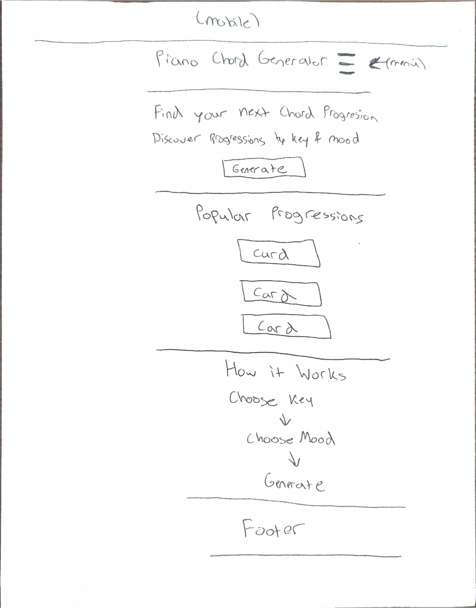
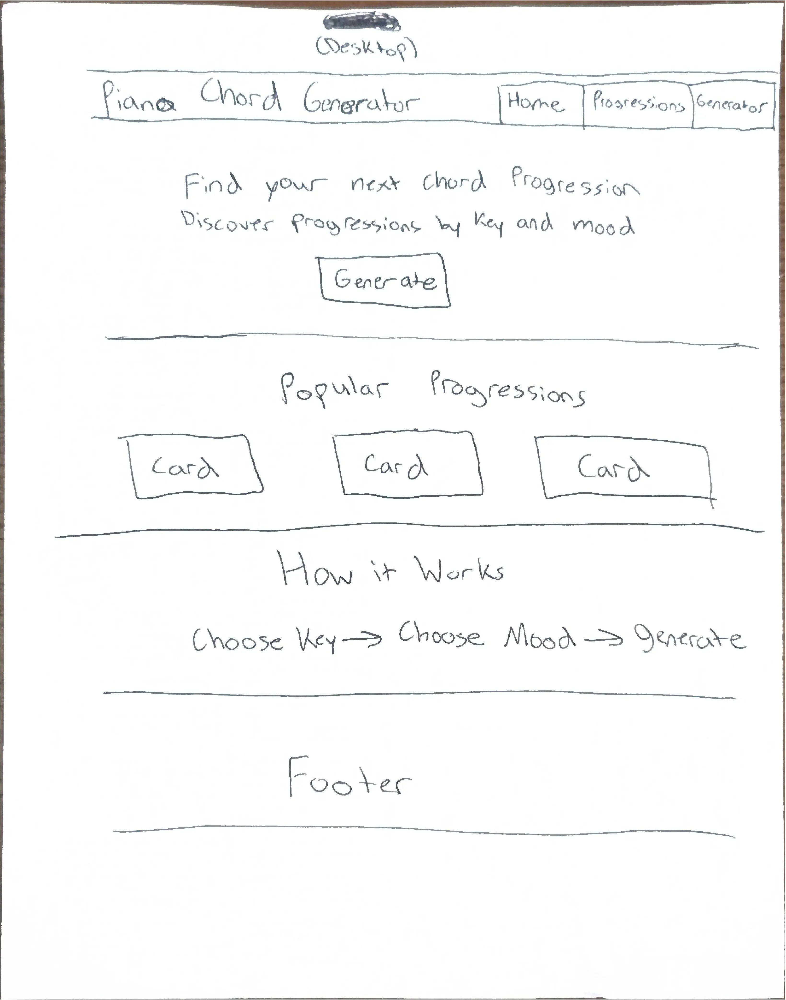

Dark Navy
#1B263B
Used for the header, footer, navigation, and important text.
WDD 231 Individual Website Project Site Plan
This name was selected because it clearly explains the purpose of the website. The site will help piano players find and generate different chord progressions that they can use for practice, songwriting, or inspiration.
The purpose of the Piano Chord Progression Generator is to help users discover different piano chord progressions. Users will be able to browse progressions, filter them by things such as key or mood, and generate different progression ideas.
The site will also provide information about the individual chords used in each progression so users can better understand what they are playing.
The website will use a simple music-inspired color scheme with dark blue, purple, and light neutral colors.
#1B263B
Used for the header, footer, navigation, and important text.
#6C4AB6
Used for buttons, links, borders, highlighted chords, and interactive elements.
#DCE6F2
Used for cards, secondary backgrounds, and section accents.
#F8F9FA
Used as the main page background and for content areas.
Montserrat will be used for the site title, page headings, section headings, and other important labels. Its bold and clean appearance will help important information stand out.
Roboto will be used for paragraphs, navigation links, buttons, chord information, forms, and other general website content because it is simple and easy to read.
The following wireframes show the planned home page layout for both a mobile screen and a larger desktop screen.

